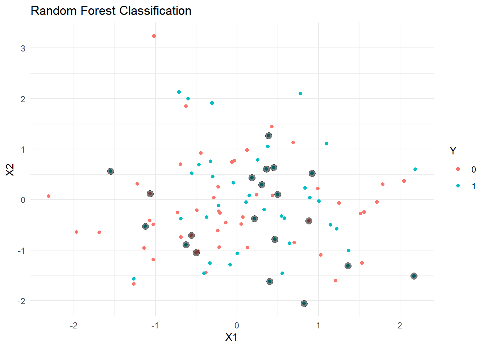

# Load required libraries
library(randomForest)randomForest 4.7-1.1Type rfNews() to see new features/changes/bug fixes.library(ggplot2)
Attaching package: 'ggplot2'The following object is masked from 'package:randomForest':
margin# Set a seed for reproducibility
set.seed(123)
# Generate a random dataset with two features (X1 and X2) and a binary target variable (Y)
n <- 100
data <- data.frame(
X1 = rnorm(n),
X2 = rnorm(n),
Y = factor(sample(0:1, n, replace = TRUE))
)
# Split the dataset into training and testing sets
train_indices <- sample(1:n, 0.8 * n)
train_data <- data[train_indices, ]
test_data <- data[-train_indices, ]
# Train a random forest model
rf_model <- randomForest(Y ~ X1 + X2, data = train_data, ntree = 100)
# Make predictions on the test set
predictions <- predict(rf_model, newdata = test_data)
# Evaluate model accuracy
accuracy <- mean(predictions == test_data$Y)
cat("Model Accuracy:", accuracy, "\n")Model Accuracy: 0.5 # Visualize the random forest results
# Since we have two features, we can create a scatter plot
ggplot(data, aes(x = X1, y = X2, color = Y)) +
geom_point() +
geom_point(data = test_data, aes(x = X1, y = X2), color = "black", size = 3, alpha = 0.5) +
ggtitle("Random Forest Classification") +
theme_minimal()